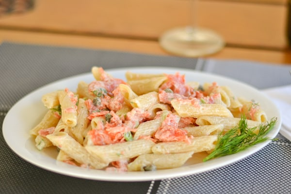

Cheesy Salmon Pasta

Description
For those who love salmon, here's a new way to switch it up a bit. Simple and easy, yet simply satisfying! You will want more and more. It's rich, has a nice tangy flavor to it, and is absolutely delicious!
Ingredients
- 1 (8 ounce) package uncooked spaghetti
- 1 ½ tablespoons olive oil
- 1 cup chopped sweet onions
- 3 green onions, finely chopped
- 2 tablespoons prepared basil pesto
- 2 (6 ounce) cans salmon, drained and flaked
- ½ cup Parmesan cheese
Steps
- Bring a large pot of lightly salted water to a boil. Add pasta and cook for 8 to 10 minutes or until al dente; drain.
- Heat olive oil in a skillet over medium heat. Stir in the onions, green onions, and pesto. Cook until tender. Mix in salmon, and cook until heated through. Stir in 1/2 the Parmesan cheese, and continue cooking 5 minutes. Toss with the cooked pasta, and sprinkle with remaining Parmesan cheese to serve.